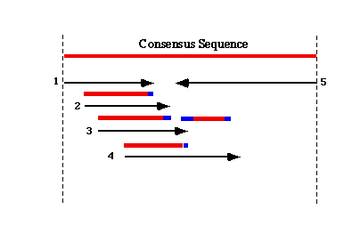

TIGR Assembler begins the assembly process by building a table of all possible 10-mers found within the EST dataset, and then uses the 10-mer content of each EST to group possibly overlapping sequences together. The alignment of overlapping sequence is performed by a modified Smith-Waterman algorithm. The degree of similarity needed for the algorithm to add a new EST sequence to an assembly is at least 95% identity over a minimum of 40 bp of overlapping sequence, with a maximum of 25bp of unmatched sequence at either end.
| 
|
Caveat : - For the most part the parameters used in the assembly process produce a good compromise between the two extremes that would either group together all ESTs from similar but distinct genes or at the other extreme never assemble anything but identical sequence entries (single pass EST sequencing would rarely produce such perfect sequence). As a result of this compromise it is important to remember that the assemblies are artificial groupings based on sequence similarity found in the EST data itself. Thus there are situations where assemblies do not include all the ESTs actually derived from that gene, and other cases where ESTs from very closely related genes are indistinguishable. Bearing this in mind, the process is still very worthwhile. The assemblies reduce redundancy, aid in identification because the consensus sequences are longer than individual ESTs, and have the potential to identify alternative splice products.